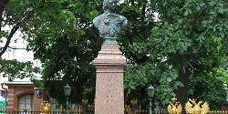
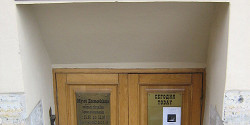
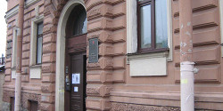
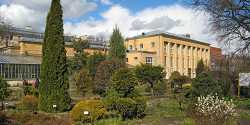
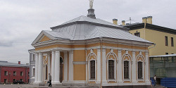
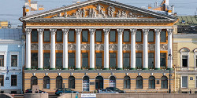
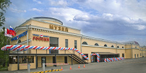
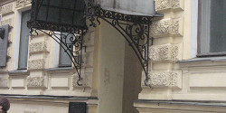
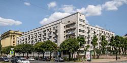

Музеи Санкт-Петербурга
Государственный Русский музей
Первые экспонаты были переданы в Русский музей Эрмитажем, Академией художеств, Гатчинским и царскосельским Александровским дворцами, многое пожертвовали частные лица, а часть была приобретена за счет ассигнований из государственной казны. Князь Александр Лобанов-Ростовский подарил музею свою личную коллекцию портретной живописи, княгиня Мария Тенишева — богатую коллекцию графики. За первое десятилетие существования музея количество экспонатов увеличилось вдвое. Это были иконы, рисунки, гравюры, скульптуры и предметы декоративно-прикладного искусства. Со временем собрание пополнилось и советской живописью.
Санкт-Петербург, набережная Петровская, 6Домик Петра I
Днем основания Санкт-Петербурга считается 16 мая 1703 г., когда Петр I лично заложил первый камень в фундамент крепости на Заячьем острове. Для того, чтобы ежедневно надзирать за строительством, он повелел неподалеку соорудить для себя летний дом. Поразительно, что самое старинное строение новой столицы сохранилось до наших дней. Но, если вдуматься, ничего особенного в этом факте нет, ведь сам император несколько лет спустя повелел для сбережения укрыть постройку навесом, создав, таким образом, собственный музей. Рассказывают, что дом поставлен за три дня бригадой искусных, но безымянных плотников.Крейсер «Аврора»
Одним из первых кораблей-музеев в Санкт-Петербурге стал крейсер «Аврора», бывший защитником России в двух войнах — Русско-японской 1904-1905 гг. и Первой мировой 1914-1918 гг., в которой он участвовал в бригаде крейсеров Балтийского флота. Также крейсер «Аврора» известен за счет своей роли в событиях Октябрьской революции 1917 г. В настоящее время корабль (считается филиалом Центрального военного-морского музея Петербурга) — это не просто музей, а символом города, посещение которого для туристов стоит в одном ряду с Дворцовой площадью, Зимним Дворцом и Русским музеем.Раскройте тайны Питерских дворов и узнайте что скрывается за их неприступными фасадами.
Пройдите вместе с опытным проводником проходными дворами насквозь через десяток городских кварталов.
Золотой треугольник Петербурга! Главное в Петербурге за 1,5 часа.
Лучший пеший обзорный маршрут для знакомства с городом.
Васильевский остров глазами островитянина. Проходные дворы Васильевского острова.
Настоящее путешествие внутри города по Васильевскому острову
Кунсткамера в Санкт-Петербурге
Расположенный на набережной Невы в историческом центре Санкт-Петербурга Музей антропологии и этнографии имени Петра Великого (иначе Кунсткамера) является одним из крупнейших музеев такого рода. Его собрание составляют экспозиции по культуре и быту народов мира, но более всего он славится своей коллекцией «уродцев» — анатомических редкостей и аномалий.
Санкт-Петербург, пер. Кузнечный, 5/2, кв. 119Музей Достоевского
Литературно-мемориальный музей Ф.М. Достоевского был открыт 12 ноября 1971 года в доме на Кузнечном переулке 5/2. Здесь он работал над ранней повестью Двойник, здесь был написан его последний роман Братья Карамазовы. Квартира Достоевских воссоздавалась по воспоминаниям современников и жены писателя.
Санкт-Петербург, ул. Декабристов, 57, кв. 21Музей-квартира Блока
В мемориальной квартире № 21 на четвертом этаже восстановлены кабинет, столовая, спальня Блока и гостиная его жены — Любови Дмитриевны Менделеевой-Блок. В музее регулярно проходят литературные вечера, концерты и ежегодные научные чтения, посвященные жизни и творчеству Александра Блока.Следите за новыми событиями в Музее Магии
Отметьте День Рождения с любимыми героями
Таинственные корпоративы в центре Санкт-Петербурга
Эрмитаж
Государственный Эрмитаж — гордость России, крупнейший в стране культурно-исторический музей, занимающий 6 исторический зданий. Сегодня в Эрмитаже собрано почти 3 миллиона экспонатов, среди которых произведения живописи, графика, скульптуры, предметы прикладного искусства, коллекция нумизматики и археологические памятники.
Санкт-Петербург, ул. профессора Попова, 2Ботанический музей им. В. Л. Комарова
Единственный в стране ботанический музей находится на территории Ботанического сада. В собрание музея входят богатейшие ботанические коллекции, собранные известными учеными-путешественниками Н. М. Пржевальским, П. К. Козловым, Г. Н. Потаниным, В. И. Роборовским, В. Л. Комаровым и другими.
Санкт-Петербург, Заячий остров, Петропавловская крепость, 3Ботный дом
Слева от колокольни Петропавловского собора стоит небольшое строение с четырехколонным портиком и фигурой женщины с веслом на крыше. Его не минует ни один посетитель Музея истории Санкт-Петербурга, потому что здесь расположены кассы и сувенирный магазин.Парк-отель «Медвежья гора» — идеальное место для отдыха!
Современные уютные коттеджи до 12 чел.
Ресторан «Мейд ин Раша» • Свадьба мечты
Сафари • Ферма • Развлечения
Скидка 20% по промокоду партнеров
Здесь начинаются приключения!
Военно-исторический музей артиллерии в Санкт-Петербурге
Полное название этого музея, что расположен прямо напротив Петропавловской крепости, — «Военно-исторический музей артиллерии, инженерных войск и войск связи». А общеупотребительное — просто «Артиллерийский музей».Военно-медицинский музей в Санкт-Петербурге
В Санкт-Петербургском военно-медицинском музее, расположенном в районе Витебского вокзала, не бывает аншлага, его кассы не осаждают толпы любознательных туристов и горожан. Тем не менее он стабильно удерживает пальму первенства в списке наиболее значимых культурных учреждений Северной столицы.Всероссийский музей А.С. Пушкина в Петербурге
Старейший Пушкинский музей России ведет свою историю с 1879 года. На сегодняшний день здесь хранятся богатейшие коллекции: это иконографические, мемориальные, изобразительные, историко-бытовые материалы пушкинской эпохи, а также произведения живописи, графики и скульптуры мастеров 19 и 20 вв.Горный музей
Великолепный, удивительный, потрясающий — этих слов недостаточно, чтобы передать ошеломляющее впечатление, которое производит на посетителей Горный музей в Санкт-Петербурге, истинный храм науки геологии. Неспроста талантливый архитектор А. Н. Воронихин спроектировал его фасад.Государственный музей истории религии
В историческом центре Санкт-Петербурга, недалеко от Эрмитажа, уже более 100 лет работает уникальный в своем роде Музей истории религии, посвященный истории возникновения и развития верований и культов у разных народов мира.
Санкт-Петербург, Заячий остров, Петропавловская крепостьГосударственный музей истории Санкт-Петербурга
Невозможно представить себе историю России без Питера. Неудивителен интерес наших современников к жизни, быту, интересам и стремлениям петербуржцев. Ответы на множество вопросов хранятся в залах Музея истории Санкт-Петербурга.
Санкт-Петербург, ул. Цветочная, 16ЛГранд Макет Россия
Шоу-музей «Гранд Маркет Россия» — второй в мире по площади после гамбургской «Миниатюрной страны чудес», он занимает 800 кв. м. Музей представляет собой собирательный образ городов и регионов России — Москвы, Санкт-Петербурга, Урала, Дальнего Востока, Севера и других.Дворец графов Шереметевых
Шереметевский дворец - Музей музыки, также именуемый «Фонтанный дом» по месту своего расположения на территории бывшей усадьбы графов Шереметевых«Фонтанный дом». Участок земли по реке Фонтанке (Безымянный Ерик) был пожалован Петром I фельдмаршалу, графу Б. П. Шереметеву в 1712 г.Дворец Меншикова
Дворец Меншикова на Васильевском острове (1710—1727) — первый из ряда дворцов, строившихся для высших сановников — «птенцов гнезда Петрова». Над ним трудились лучшие архитекторы, включая Трезини и Растрелли-старшего. Меншиков постоянно требовал изменений, поэтому строительство затянулось до ссылки.
Санкт-Петербург, ул. Графтио, 2бДом-музей Шаляпина в Санкт-Петербурге
Экспозиция петербургского дома-музея Шаляпина состоит из двух частей. Одна из них — мемориальная, посвящена жизни и творчеству оперного артиста. Среди богатейших материалов — либретто и нотные автографы опер, эскизы декораций и костюмов, документальные фотографии, подлинные театральные костюмы.
Санкт-Петербург, Троицкая пл., 1Дом политкаторжан
Политкаторжане — официальный статус, который получали после 1917 г. жертвы царского режима, прошедшие тюрьмы и каторгу за подготовку революции в России. Среди них были не только большевики, но и анархисты, бундовцы, меньшевики, эсеры и даже последние старики-народовольцы.
О том, что Санкт-Петербург — город музеев, красноречивее всего свидетельствует... его карта. Едва ли найдётся улица в историческом центре, не способная похвастать хоть одним музеем. Всего же музейных собраний в Питере насчитывается более двухсот — а это значит, что если ежедневно посещать одну экспозицию (так и быть, отдыхая в выходные и праздники), то на обход всего музейного богатства города потребуется почти год! И что самое приятное — количество здесь вовсе не в ущерб качеству! Ведь музеи Санкт-Петербурга — одни из самых интересных и разнообразных по тематике в мире: от кораблей-музеев до дворцово-парковых комплексов в несколько сот гектаров. В них можно увидеть всё, чем только успела отметиться цивилизация: египетские мумии и стеклянного человека, иконопись и поп-арт, ружья и бюстгальтеры, чумы и козетки с золочёными витыми ножками.
Один из самых знаменитых не только в городе, но и во всем мире музеев — Кунсткамера («Кабинет редкостей»). Это также самый старый российский музей и один из самых больших музеев подобного рода. Во множестве его экспозиций описываются культурные особенности разных стран и народов мира, ещё здесь представлены коллекции антропологических экспонатов, куда в том числе входят черепа представителей разных народов, и множество предметов, найденных во время археологических экспедиций. Но самая популярная выставка представляет собой коллекцию экспонатов с ярко выраженными аномалиями, заспиртованных «уродцев» с самыми разными отклонениями, которые оставляют неизгладимое впечатление в памяти каждого человека.
Очень богат Санкт-Петербург музеями с исторической тематикой. Здесь есть такие важные музеи, рассказывающие о истории великой страны, как Российский Этнографический музей, Государственный музей политической истории России, Государственный мемориальный музей А. В. Суворова, Государственный мемориальный музей обороны и блокады Ленинграда, Государственный музей истории Санкт-Петербурга (Историко-культурный заповедник «Петропавловская крепость»), Всероссийский музей А. С. Пушкина... Таких музеев немало, и посетить их все совершенно невозможно не только в короткий отпуск, но и во вполне продолжительную поездку.
Немало знаменитых талантливых людей так или иначе связало свою судьбу с Санкт-Петербургом, оставив вечные следы в истории этого прекрасного города и память о себе в многочисленных музеях-квартирах, по-прежнему существующих в его домах. В таких квартирах время остановилось на годы и века, сохранив для ценителей многие предметы, которых их прежние владельцы касались руками, среди которых проходила их жизнь. Музей Анны Ахматовой в Фонтанном доме, Музей-квартира Блока, Музей-квартира Некрасова, Музей Достоевского, Музей Ильи Ефимовича Репина, музей Зощенко, Музей-квартира Николая Андреевича Римского-Корсакова, Музей-архив Д. И. Менделеева, Музей-квартира И. И. Бродского, Музей-квартира Ф. И. Шаляпина — эти и другие замечательные музеи хранят отпечатки жизни талантливых людей России.
Конечно, невозможно представить себе северную столицу без посещения художественных музеев. Здесь и огромный Русский музей с широкими залами и коридорами, в котором выставлена поразительная по своими масштабами и уникальности коллекция произведений искусства российских мастеров с XI века до наших дней. И, конечно, крупнейший в России культурно-исторический музей — Государственный Эрмитаж, в коллекции которого около 3 миллионов экспонатов, среди которых картины, графика, скульптуры, предметы прикладного искусства, нумизматика и предметы археологических раскопок. Помимо этих двух музеев искусств большой интерес представляют Государственный музей городской скульптуры и Научно-исследовательский музей Российской академии художеств.
Чего бы вы ни ждали от Санкт-Петербурга, сколько бы ни читали о музеях и галереях, улицах, каналах, мостах, дворцах, коммуналках, дворах-колодцах, — всё ничто по сравнению с личным знакомством с этим восхитительным городом.